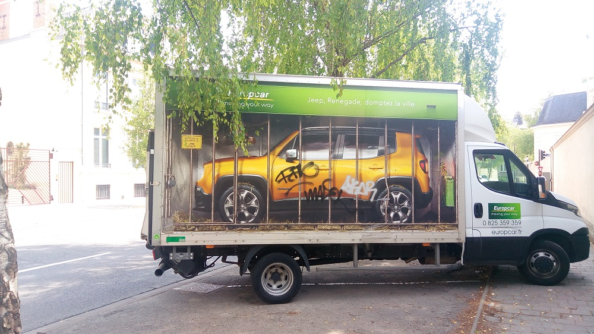

Les bO tutos
Que faire quand on a du pain sur la planche
19/01/2021
Il faut bien comprendre qu'il n'y a pas trop le choix, si vous avez du pain sur la planche, vous pouvez:
- Le déplacer ailleurs
- Le manger
- Attendre qu'il disparaisse
Vous savez probablement comment faire dans les 2 premiers cas, nous allons donc ici explorer l'ultime solution: "attendre que le pain disparaisse".
On voit que dans cet exemple, la personne qui a du pain sur la planche a du mal à progresser bien qu'elle fait preuve d'une remarquable patience (En reconnaissance d'une perfomance aussi bonne, je ne peux que vous encourager à vous abonner à Bsan).
En effet, à l'abris d'éléments perturbateurs, le pain va mettre beaucoup de temps à se désintègrer. C'est pourquoi nous recommandons de faire cela en exterieur, là ou la nature pourra vous aider: insectes, oiseaux, ... la faune vous aidera à faire disparaitre le pain petit à petit. De plus, la pluie est un grand avantage pour décomposer le pain. Nous recommandons de ne pas prendre du pain trop dur afin que la pluie agisse plus rapidement. D'ailleurs un bon coup de vent peut le faire dispairaitre en un instant.
Il est vrai qu'en interieur vous pouvez avoir un coup de main de Pomme, enfin Pomme... peu importe comment vous nommé votre animal de compagnie (si vous en avez un).
Commentaires
Comments 1
Merci, j'étais dans le pétrain, me voila libèré!!
Comme j'étais à Beauxbâtons, j'en ai profité pour poser la question à quelques grand sorciers et ils m'ont assuré pouvoir faire disparaitre le pain d'un coup de baguette! Quel gain de temps. Sinon vos méthodes marchent, c'est juste un peu lent mais pour des moldus ou craquemols c'est le top.
Marche très bien, même pour du pain d'épice ou de mie, je recommande. Par contre j'ai essayé avec un pain de glace, en été ou sous la pluie c'est certe plus rapide en interieur, mais en dessous d'une certaine temperature, le pain de glace disparait plus vite en interieur ou il fait plus chaud/
AxxA
J'espère que le club sandwich jeux de mots appréciera cet article jusque dans
ses plus hautes sphères.
D'autres articles:
-
 Capture vidéo sous Linux
Capture vidéo sous Linux
-
 Lecture multimédia depuis le terminal
Lecture multimédia depuis le terminal
-  Libérons cette caisse
-
 Écriture en boucle
Écriture en boucle